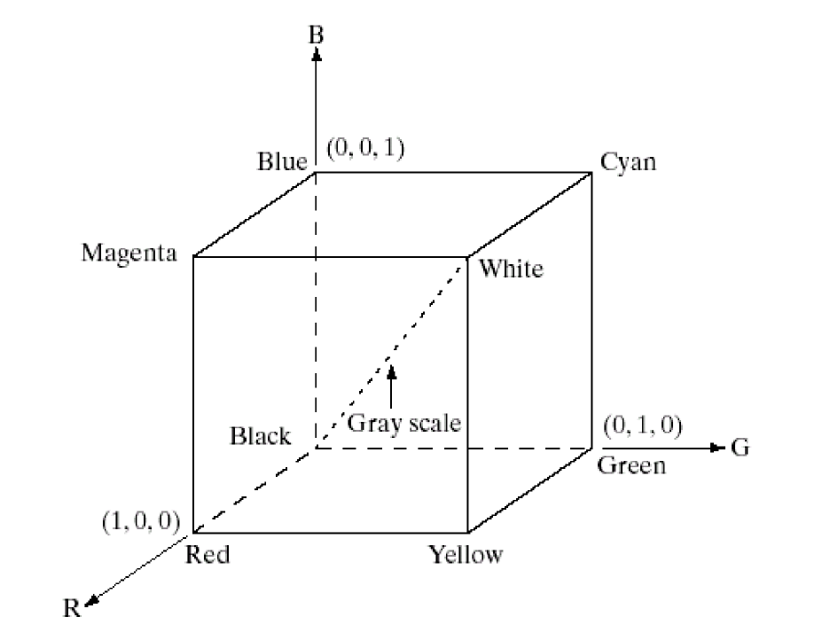

数字图像处理(2)：数字图像基础
Last updated on December 30, 2025 pm
这是SJTU-CS3324《数字图像处理》课程的知识点整理系列。本文整理部分为“第 2 章：数字图像基础”。
数字图像处理基础 (Basics of Digital Image Processing)
A. 数字图像 (Digital Image)
这一部分的核心是回答问题：什么是数字图像。它从最简单的灰度图开始，将“图像”的概念扩展到多维度、多模态。
- 1. 灰度图像 (Gray Scale Image):
- 思想: 图像最基本的形式，只包含亮度（强度）信息，没有颜色
- 数学表示:
- 二维连续函数 ，其中 是空间坐标， 是亮度
- 经过采样和量化后，变为离散函数 ，其中 是像素的整数坐标
- 特点:
- 灰度级 (Gray level): 的取值范围，通常是 ，对应 8 位深度
- 像素 (Pixel / Pel): 组成数字图像的基本单元
- 2. 二值图像 (Binary Image):
- 思想: 灰度图像的一个极端特例，只有两种可能的像素值
- 数学表示: ，其中 0 代表黑色，1 代表白色
- 用途: 常用于打印机、报纸、文字识别，或在图像处理中作为掩模 (Mask) 使用
- 3. 彩色图像 (Color Image):
- 思想: 模拟人眼对不同波长光线的感知，从而表示颜色信息
- 特点:
- 不同波长的光产生不同的颜色感受（如波长 555nm 的光对应绿色）
- 通常使用 RGB 色彩模型 (RGB color model)，由红®、绿(G)、蓝(B)三个分量图像叠加而成
- 数学表示: 由三个独立的二维函数构成：, ,
- 4. 不可见光图像 (Image from Invisible Light):
- 思想: “图像”的概念不局限于人眼可见的光谱，任何能够以二维（或更高维）形式表示的电磁波谱数据都可以是图像
- 例子:
- 伽马射线成像 (γ-ray imaging)、X 射线成像 (X-ray imaging)、紫外波段 (Ultraviolet band)
- 红外波段 (Infrared band)、微波波段 (Microwave band)、无线电波段 (Radio band)
- 用途: 广泛应用于医学成像、无损检测、遥感、天文学等领域
- 5. 光谱图像 (Spectrum Image):
- 思想: 将彩色图像的 3 个通道，扩展到数十、数百甚至数千个通道
- 数学表示: ，其中 ， 代表不同的波段 (wave band)
- 特点:
- 每个波段 k 对应一张独立的分量图像 (component image)
- 能够获取物体非常精细的光谱特征
- 用途: 飞机/卫星遥感、目标分类识别 (Object class recognition)、图像配准 (Image registration)。
- 6. 图像序列 (Image Sequence / Video):
- 思想: 在二维空间图像的基础上，增加时间维度。
- 定义: 视频就是按一定速率连续播放的一系列静态图像（帧）
- 特点: 电影 24 帧/秒 (frames/second)、电视 25 或 30 帧/秒
- 数学表示: 代表时间索引（帧号）
- 灰度视频:
- 彩色视频: , ,
- 7. 立体视觉 (Stereovision):
- 思想: 模拟人类的双眼视觉，通过从两个或多个不同视点拍摄同一场景，来获取场景的深度和三维信息
- 实现:
- 左视图 + 右视图 (Left view + right view): 这是最基本的形式，通过匹配左右视图中的对应点，可以计算出深度
- 单视图 + 深度图 (Single view + depth map): 一种更紧凑的 3D 表示，例如 Kinect 等深度相机可以直接获取
- 用途: 三维重建、自动驾驶车辆（ALV）的环境感知
- 8. 断层扫描图像 (Tomogram Image)
- 思想: 图像内容并非直接拍摄，而是通过图像重建 (Image Reconstruction) 算法，从一系列投影数据中计算出来的物体“切片”
- 用途: 医学成像，最典型的应用是 CT (Computerized Tomography)
- 9. 数字水印图像 (Image with Watermark):
- 思想: 将一些隐藏的信息（水印）嵌入到原始图像中，用于版权保护等目的
- 特点: 利用人类视觉系统 (HVS) 的特性，使得嵌入的水印在视觉上是不可见的 (Invisible differences)
- 用途: 知识产权保护 (Intellectual Property Protection)
B. 数字图像处理 (Digital Image Processing)
这一部分将图像处理任务根据其输入、输出和复杂程度，划分为三个层次。
- 低级处理 (Low-level Processing):
- 定义: 输入是图像，输出也是图像
- 特点:
- 主要在像素级 (Pixel level) 进行操作
- 通常不需要对图像内容进行理解
- 主要任务:
- 图像增强 (Image Enhancement): 如锐化、去噪、同态滤波等
- 图像复原 (Image Restoration)、图像压缩 (Image Compression)、图像分割 (Image Segmentation)
- 难点:
- 实时性要求 (Real time): 处理算法必须足够快，能够在视频帧率或交互式应用所要求的时间（毫秒级）内完成计算
- 对邻域区域的处理 (Adjacent region): 这类操作需要访问以当前像素为中心的多个周边像素，这比只处理单个像素在内存访问和计算上都更复杂
- 中/高级处理 (Middle-level & High-level Processing):
- 定义:
- 中级处理: 输入是图像，输出是图像的属性或特征（如边缘、轮廓、对象描述）
- 高级处理: 输入是中级处理得到的特征，输出是对场景的理解或决策
- 主要任务:
- 图像分析 (Image Analysis)、图像识别 (Image Recognition)、图像理解 (Image Comprehension)
- 模式识别 (Pattern Recognition)、计算机视觉 (Computer Vision)
- 难点: 计算机本身没有智能 (Computer has no intelligence)，如何让机器像人一样去“理解”图像内容是根本性的挑战
- 定义:
C. 图像通信系统 (Image Communication System)
这一部分通过一个框架图，展示了一次完整的图像/视频从采集到最终被感知的全过程，帮助我们理解信息在各个环节可能发生的变化。
整个系统可以被看作是由三大部分组成的：发送端、信道、接收端。
- 自然视频发送端 (The Natural Video Transmitter):
- 自然视频信号 (Natural video signal): 现实世界中的连续光信号
- 感知与数字化 (Sensing & digitizing): 通过摄像机等传感器捕捉光信号，并将其数字化（采样和量化），转换为数字信号
- 视频信道 (The Video Channel):
- 前端数字处理 (All front-end digital processing): 在传输前对数字信号进行处理，最典型的就是信源编码（图像压缩）
- 经典信道 (classical channel): 指的是存储媒介（如硬盘、光盘）或传输网络（如互联网、无线网络），数据在这个环节可能会引入错误或丢失
- 后端数字处理 (All back-end digital processing): 接收到数据后进行的处理，最典型的就是信源解码（图像解压）和纠错
- 自然视频接收端 (The Natural Video Receiver):
- 映射与显示 (Mapping & display): 将解码后的数字信号转换为可以在显示器上显示的模拟信号
- 感知视频信号 (Perceptual video signal): 最终的信号被人眼的视觉系统接收，并在大脑中形成感知
D. 图像质量问题 (Image Quality Issues)
这一部分引入了图像质量评价的概念，并指出了其复杂性。
- 核心问题：如何评价图像质量
- 评价的复杂性: 图像质量的最终裁判是人，而人类的感知机制 (human perception mechanism) 是极其复杂的
- HVS 的重要性: 任何有效的图像质量评价体系，都必须考虑到人类视觉系统 (Human Visual System, HVS) 的认知特性 (Cognitive properties)
- 图像质量评价的方法分类:
- 客观图像质量评价 (Objective Image Quality Assessment):
- 思想: 使用数学公式来计算图像的失真程度
- 常用指标: PSNR (峰值信噪比, Peak Signal Noise Ratio)、MSE (均方误差, Mean Square Error)
- 优点: 计算简单、可重复、客观
- 缺点: 常常与人的主观感受不完全匹配
- 主观图像质量评价 (Subjective Image Quality Assessment):
- 思想: 由真人观察者对图像质量进行打分
- 常用指标: MOS (平均主观意见分, Mean Opinion Score)
- 让一组观察者对图像质量进行评分，然后取平均值
- 优点: 最可靠，是评价图像质量的金标准
- 缺点: 成本高、耗时长、过程复杂、结果易受环境和观察者状态影响
- 客观图像质量评价 (Objective Image Quality Assessment):
采样与重建（Sampling & Reconstruction）
- 数字图像采集过程 (Digital Image Acquisition Process):
- 场景 (Scene): 现实世界中的连续物理场景
- 成像系统 (Imaging System): 将场景的光线投影到一个成像平面上，形成一幅连续的模拟图像
- 数字化 (Digitization): 通过传感器阵列对模拟图像进行处理，将其转换为数字图像，这个过程包含两个核心步骤：
- 采样 (Sampling): 在空间坐标上进行离散化
- 量化 (Quantization): 在亮度/颜色幅度上进行离散化
A. 采样 (Sampling)
- 思想: 采样就是在连续的图像上，按照一个规则的网格（sensor array），周期性地采集亮度样本点
- 空间频率: 图像的细节对应高空间频率（亮度变化快），平滑区域对应低空间频率（亮度变化慢）
- 采样定理 (Sampling Theorem):
- 核心内容: 如果一个信号是带限的 (limited-band)，即它的最高频率是有限的，那么只要采样率足够高，就可以从采样得到的离散点中无失真地恢复出原始的连续信号
- 奈奎斯特准则 (Nyquist Criterion): 足够高的采样率，指的是采样频率必须大于或等于信号最高频率的两倍
- 数学表达: ，其中 是采样间隔， 是信号的最高频率
- 二维扩展: 对于二维图像，必须在水平和垂直两个方向上同时满足采样定理
- 重要前提:
- 始信号必须是带限的: 这是采样定理能完美重建信号的前提
- 采样周期必须足够小: 即采样率必须足够高，以满足奈奎斯特准则

B. 重建 (Reconstruction)
- 思想: 重建是采样的逆过程，即如何从离散的采样点 恢复出连续的图像
- 理论方法: 如果采样过程满足了采样定理，那么理论上可以通过一个理想低通滤波器 (Ideal Low-pass Filter) 来完美地重建原始信号
- 实际实现: 在空间域，这个重建过程等价于以每个采样点为中心，放置一个二维 sinc 函数，其幅度由该采样点的灰度值决定，然后将所有这些 sinc 函数叠加起来
量化 (Quantization)
- 思想: 量化是对图像中每个像素的亮度（或颜色）幅度进行离散化的过程
- 在采样之后，每个像素点的亮度值仍然是连续的
- 量化的目的就是将这些连续值映射到一组有限的、预先定义的离散整数级别上
- 定义:
- 图像采集的第二步: 量化是紧跟在采样之后的步骤
- 数学表示: ，其中 是采样后某个像素的连续亮度值， 是量化后得到的离散灰度级
- 灰度级数 : 量化后的离散级别的总数，通常由分配给每个像素的比特数 决定，即
- 例如，8位灰度图 ，则有 个灰度级（0-255）
- 量化与人类视觉系统 (HVS) 的关系:
- 敏感度阈值: 人眼对灰度变化的感知存在一个敏感度阈值；如果两个灰度级之间的差异小于这个阈值，人眼就无法分辨它们
- 量化失真 (Quantization distortion): 量化本质上是一种有损操作，会引入量化失真（或量化误差）
- 量化级别的选择:
- 只要量化失真小于人眼的敏感度阈值，这种失真是不可察觉的
- 因此，只要我们选择足够大的量化级别数 （即足够多的比特数 ），就可以保证量化后的图像在视觉上与原始模拟图像没有差异
- 这也是为什么 8 位（256 级）灰度图成为标准的原因，因为它对于大多数图像来说，已经足以使量化失真低于人眼的感知阈值
- 伪轮廓 (False Contouring):
- 现象: 当量化级别 过少时（如使用 4 位/ 16 级），图像中本应平滑过渡的区域，会因为亮度值被强制映射到少数几个离散级别上，而出现阶梯状的、不自然的轮廓线
- 这种在原始图像中并不存在的轮廓，就被称为伪轮廓或假轮廓
- 原因: 伪轮廓的产生，是因为量化导致的灰度级跳变过大，超过了人眼的敏感度阈值，从而被人眼感知为一条分界线
- 现象: 当量化级别 过少时（如使用 4 位/ 16 级），图像中本应平滑过渡的区域，会因为亮度值被强制映射到少数几个离散级别上，而出现阶梯状的、不自然的轮廓线
辐射度学基础 (Radiometry Fundamentals)
- 思想: 辐射度学是用物理量来客观地度量光辐射能量的一门学科
- 它回答了“光有多亮？”这个问题，但完全从物理能量的角度出发，不考虑人眼的感受
- 重要性:
- 关联人类视觉系统 (Related to HVS): 这些物理量是人眼视觉感知的基础
- 算法设计的基础: 对于图像增强、复原和压缩等算法的设计至关重要
A. 视敏度 (Visual Acuity)
- 核心现象:
- 波长敏感性: 人眼对不同波长（颜色）的光的敏感度是不同的
- 亮度感知差异: 即使两束不同颜色的光具有完全相同的物理辐射功率，我们人眼感受到的亮度也可能完全不同
- 视敏函数 (Luminosity Function): 描述人眼对不同波长光的相对敏感度的曲线
- 峰值: 人眼对波长为 555nm 的绿光最敏感
- 关键定义 (Notations):
- : 为了产生相同的亮度感觉，不同波长 的光所需要的物理辐射功率
- 的值最小，因为 555nm 的光效率最高
- 视敏度 (Visual sensitivity) :
- 它是 的倒数，直接代表了人眼对波长 的光的敏感程度， 的值最大
- 相对视敏函数 (Relative visual acuity function) : 将视敏度 进行归一化，使其最大值为 1
- : 为了产生相同的亮度感觉，不同波长 的光所需要的物理辐射功率

B. 光通量 (Luminous Flux)
- 思想: 光通量 是根据人眼感知来度量的“光的总量”或“光功率”
- 它将物理辐射功率 通过相对视敏函数 进行了加权
- 单位: 流明 (lumen, )
- 计算:
- 对于 555nm 的纯绿光: 1瓦 (Watt) 的辐射功率对应 683 流明的光通量
- 对于多色光: 需要对所有波长的辐射功率 按 进行加权积分
- 对于 555nm 的纯绿光: 1瓦 (Watt) 的辐射功率对应 683 流明的光通量
- 结论: 即使物理辐射功率相同，不同的光源（如白炽灯和 LED 灯）由于其光谱分布不同，产生的光通量（人眼感受到的总亮度）也不同
C. 发光强度 (Luminous Intensity)
- 思想: 描述一个光源在特定方向上发光能力的强弱。
- 定义: 单位立体角内发出的光通量
- 单位: 坎德拉 (Candela, )， (流明/球面度)
- 特点:
- 对于均匀发光的点光源，其总光通量 与发光强度 的关系是
- 对于非均匀的辐射表面，不同方向 的发光强度不同，通常遵循余弦定律
D. 照度 (Illuminance)
- 思想: 描述一个表面被照亮的程度
- 定义: 照射到物体表面的单位面积上的光通量
- 单位: 勒克斯 (lux, )，
- 例子: 阴天：，晴天
E. 亮度 (Brightness)
- 思想: 描述一个发光面（或被照亮的反射面）在特定方向上看起来有多亮
- 这是与人眼最终感知最直接相关的物理量
- 定义: 发光表面在特定方向上的单位投影面积上的发光强度

- 单位: 坎德拉/平方米 ()，也称为 尼特 ()
- 特性: 对于一个理想的漫反射表面 (diffusion reflection)，其在任何方向上的亮度 都是一个常数（与距离无关）
- 这意味着，无论从哪个角度、在多远的距离观察一张白纸，只要它被均匀照亮，人感觉到的亮度都是一样的
- 这解释了为什么我们看一个物体不会因为我们走近或走远而觉得它变亮或变暗

色度学基础 (Colorimetry Fundamentals)
- 思想: 色度学是对人眼颜色感知进行量化度量的科学
- 基本原理:
- 颜色视觉 vs. 单色视觉: 人眼的颜色感知（明视觉）和在极暗环境下的单色视觉（暗视觉）是由两种不同的感光细胞负责的：
- 视锥细胞 (Cones): 负责颜色感知，在高亮度下工作
- 视杆细胞 (Rods): 负责感知亮度，在低亮度下工作，无法分辨颜色
- 波长与颜色: 不同波长的光会引起不同的颜色感觉
- 颜色混合: 不同的光按不同比例混合，可以产生不同的颜色，也可能产生相同的颜色（同色异谱现象，Metamerism）
- 三原色理论: 红 (Red)、绿 (Green)、蓝 (Blue) 三种原色光，可以通过不同比例的混合，来合成出绝大多数人眼可见的颜色
- 颜色视觉 vs. 单色视觉: 人眼的颜色感知（明视觉）和在极暗环境下的单色视觉（暗视觉）是由两种不同的感光细胞负责的：
A. HSI 色彩空间
这是一种非常符合人类描述颜色直观感受的模型。它用三个参数来定义一个颜色。
- 三个核心参数:
- H (色调, Hue):
- 定义: 颜色的基本属性，即“是什么颜色”，如红色、绿色、蓝色等
- 表示: 通常用一个角度来表示（0° 到 360°）
- S (饱和度, Saturation):
- 定义: 颜色的纯度或鲜艳程度，表示颜色中掺入白光的比例
- 表示:
- 表示最纯粹、最鲜艳的颜色（如光谱色）
- 越小，颜色越不饱和，看起来越“灰白”
- 表示完全不饱和，即各种灰色、白色或黑色
- I (强度, Intensity):
- 定义: 颜色的明亮程度，对应于我们常说的亮度
- H (色调, Hue):
- 色度 (Chroma): 通常指 色调(H) 和 饱和度(S) 这两个参数的组合
- 它们共同定义了颜色的“质”，而强度(I)定义了颜色的“量”
- 模型: HSI 模型常被可视化为一个双锥体或圆柱体
- HSV 和 HSL 是其常见的变体
B. RGB 色彩空间
这是在数字设备（如显示器、相机）中最常用的一种色彩模型。
- 生理基础 (Fact): 人眼中有三种类型的视锥细胞，分别对红、绿、蓝光最敏感
- 加色模型 (Additive Model): RGB 是一种加色模型，适用于发光设备（如显示器）
- Red + Green = Yellow (黄)
- Green + Blue = Cyan (青)
- Blue + Red = Magenta (品红)
- Red + Green + Blue = White (白)
- 无光 = Black (黑)

-
减色模型 (Subtractive Model): 与加色模型相对，在印刷和绘画领域使用的是减色模型（颜料是通过吸收特定波长的光来呈现颜色的）
- 其三原色是 青 (Cyan)、品红 (Magenta)、黄 (Yellow)
- Yellow (吸收蓝光) + Cyan (吸收红光) = Green (反射绿光)
- Yellow (吸收蓝光) + Cyan (吸收红光) + Magenta (吸收绿光) = Black
-
RGB 颜色立方体 (RGB Color Cube): RGB 空间可以被可视化为一个立方体
- 三个坐标轴分别代表 R, G, B 的值
- 立方体的八个角点分别是黑、白、红、绿、蓝、青、品红、黄
- 从原点(黑)到对角(白)的连线上的所有点，都是灰度色

- CIE 对 RGB 的标准化定义 (CIE defines the three primary colors): 为了让 RGB 成为一个科学、可度量的标准，CIE（国际照明委员会）定义了一套标准的物理三原色
- 基色 (Primary Colors): 挑选了三种特定波长的单色光（700nm 的红，546.1nm 的绿，435.8nm 的蓝）作为标准基色
- 生成白光: 由于人眼对这三种光的敏感度不同，要混合出人眼感觉中的标准白光，所需的三种原色光的物理辐射功率比例为
- 单位缩放: 为了计算方便，CIE 对单位进行了重新定义，把产生 1 单位白光所需的红、绿、蓝光的量，分别定义为1个基色单位
- 经过这样的缩放后，数学表达变得非常简洁：
- 任意颜色的表示: 任何一个颜色 ，都可以表示为这三个标准化基色的线性组合：
- 这里的 (R, G, B) 就是一个颜色在 CIE RGB 标准下的 RGB 值
- 单位缩放: 为了计算方便，CIE 对单位进行了重新定义，把产生 1 单位白光所需的红、绿、蓝光的量，分别定义为1个基色单位
C. XYZ (CIE 1931) 色彩空间
XYZ 是一个为了克服 RGB 模型的局限性而设计的、更科学、更标准的设备无关的色彩空间。
- 背景: RGB 模型存在“负数问题”（某些颜色无法用正数的 R,G,B 配出）且与具体设备相关
- 思想: CIE 在 1931 年定义了一个基于三个虚拟、不存在的主色 [X], [Y], [Z] 的色彩空间
- 特点:
- 设备无关: 是一个绝对的、标准的色彩描述系统
- 包含所有可见色: 人眼可见的所有颜色都可以用正数的 X, Y, Z 坐标来表示
- Y 分量代表亮度: 这是最巧妙的设计，Y 值直接对应于颜色的亮度 (Intensity/Luminance)
- 同色异谱 (Metamerism): 物理上光谱完全不同的两个光源，只要它们计算出的 (X,Y,Z) 三刺激值相同，那么在人眼看来，它们的颜色就是完全一样的
- 从 RGB 到 XYZ 的转换: 任何一个在 CIE RGB 空间的坐标 (R,G,B)，都可以通过一个线性变换矩阵，精确地转换到 XYZ 空间中的坐标 (X,Y,Z)
- xyY 色度图 (Chromaticity Diagram):
- 目标: 将三维的颜色信息 (X,Y,Z) 分离为二维的色度 (Chromaticity) 和一维的亮度 (Luminance)
- 计算方式: 通过对 XYZ 坐标进行归一化处理
- 二维表示: 任何颜色的色彩属性（不含亮度）就可以用一个二维坐标 (x, y) 来唯一表示
- 马蹄形图: 将所有可见光谱色对应的 (x,y) 点绘制出来，就形成了著名的 CIE 1931 色度图
- 这个马蹄形的区域包含了人眼能感知到的所有色度
- xyY 色彩空间: 用 (x,y) 坐标表示色度，用 Y 坐标表示亮度，共同构成 xyY 色彩空间
- 这种表示方式非常直观，(x,y) 决定了色度，Y 决定了亮度
- 同色异谱现象 (Metamerism):
- 定义: 两个由不同光谱功率分布 (spectral power distributions) 构成的光源，在人眼看来却可能是完全相同的颜色
- 原因: 尽管它们的物理光谱不同，但它们作用于人眼三种视锥细胞后，产生了完全相同的三刺激值 (Tristimulus Values)
- 人脑只接收这三个刺激值，无法反向解析出原始的光谱构成
D. 电视系统中的一些公式 (Some Formulas used in TV)
这部分内容是色度学理论在电视广播标准中的具体应用。
为了兼容黑白电视，彩色电视信号需要分离出亮度信号(Y)和色度信号。
- 亮度方程 (Luminance Equation): 亮度信号就是黑白电视接收到的信号
- NTSC 制:
- PAL 制:
- 这两个公式都体现了人眼对绿色的亮度贡献最为敏感
- 色差信号 (Chrominance): 通过从蓝色和红色分量中减去亮度分量，得到两个色差信号，用于传输颜色信息
- 这个 YUV (或其变体 YCbCr) 系统就是视频压缩中广泛使用的色彩空间
- 由于人眼对颜色细节的分辨能力远低于对亮度细节的分辨能力，它允许我们对人眼不敏感的色度分量进行更高程度的压缩（色度子采样）
人类视觉系统 (Human Visual System)
A. 人眼的结构 (Structure of the Human Eye)
- 基本结构: 光线通过角膜(Cornea)、瞳孔(Pupil)、晶状体(Lens)后，聚焦在眼球后部的视网膜(Retina)上
- 视网膜 (Retina):
- 感光细胞: 视网膜上分布着两种核心的感光细胞
- 视锥细胞 (Cones):
- 负责明视觉 (Photopic Vision)，即在光线充足的环境下工作
- 能够分辨颜色和高细节。
- 主要集中在视网膜的中心区域——中央凹 (Fovea)
- 视杆细胞 (Rods):
- 负责暗视觉 (Scotopic Vision)，在光线昏暗的环境下工作
- 对光极其敏感，但无法分辨颜色，且分辨率较低。
- 主要分布在视网膜的周边区域
- 视锥细胞 (Cones):
- 盲点 (Blind Spot): 视神经(Optic Nerve)与视网膜连接的地方，没有任何感光细胞，因此构成了视觉上的盲点
- 但我们通常感觉不到，因为大脑会对画面进行脑补
- 感光细胞: 视网膜上分布着两种核心的感光细胞
- 视觉通路: 视网膜捕捉到的信号，通过视神经传递到大脑的视觉皮层 (Visual Cortex) 进行进一步的处理和解读
- 大脑皮层超过 50% 的区域都参与了视觉信息处理
- 腹侧-背侧模型 (Ventral-dorsal model): 大脑处理视觉信息有两条主要的通路
- 腹侧通路 (“What” Pathway): 负责识别物体是什么（形状、颜色、身份），与记忆有关
- 背侧通路 (“Where” / “How” Pathway): 负责定位物体在空间中的位置、感知运动，并引导身体的动作（如伸手去拿）
B. 人类视觉系统的感知特性
感知亮度范围 (Perceptive Brightness)
- 亮度适应 (Brightness Adaption):
- 人眼可以工作的亮度范围极其巨大（约 ）
- 由明到暗的适应过程（暗适应）很慢，需要几分钟
- 由暗到明的适应过程（明适应）很快，只需几秒钟
- 适应后的感知范围: 人眼同时能分辨的最亮和最暗的动态范围是有限的，亮环境下约为 1000:1（明视觉），暗环境下急剧下降到约 10:1（暗视觉）
- 主观亮度随环境变化: 我们感知到的一个物体的亮度，会受到其周围背景亮度的强烈影响
- 主观亮度是对数函数: 我们主观感受到的亮度变化与物理光强度的对数成正比，而非线性关系
- 韦伯定律 (Weber Ratio):
- 核心思想: 人眼对相对亮度的变化非常敏感，而对绝对亮度不敏感
- 韦伯比率: 我们能察觉到的最小亮度变化 ，与背景亮度 成正比
- 在很大范围内，这个比率大约是 0.018
- 对数感知: 这也意味着，我们主观感受到的亮度，与物理光强度的对数成正比
分辨能力 (Resolving Power)
- 分辨率 (Resolution):
- 亮度分辨率 (Brightness Resolution): 人眼区分不同亮度等级的能力，由韦伯比率描述
- 时间分辨率 (Temporal Resolution): 人眼感知快速变化或运动场景的能力，超过一定速度就会看到运动模糊
- 空间分辨率 (Spatial Resolution): 人眼分辨图像中精细细节的能力，通常用能看清的最密集条纹来衡量
- 空间与时间分辨率的权衡 (Tradeoff): 人眼的视觉系统在处理信息时，无法同时达到最高的空间分辨率和最高的时间分辨率
- 应用:
- 图像和视频编码 (image and video coding): 上述这些 HVS 的特性和局限性，正是图像和视频压缩技术能够大幅去除心理视觉冗余的理论基础
- 对颜色分辨率的特性:
- 核心结论: 人眼对颜色细节的分辨能力远低于对亮度细节（灰度）的分辨能力
- 应用: 色度子采样 (Sub-sampling of chrominance components)
- 这个特性是现代视频压缩的基石
- 色度子采样的 J:a:b 格式:
- J: 代表水平采样的参照宽度，通常固定为 4 个像素，它定义了一个基础的像素块
- a: 代表在第一行的 J 个像素中，有多少个色度样本（Cr, Cb）
- b: 代表在第二行的 J 个像素中，相对于第一行，新增了多少个色度样本
- 在编码时，可以完整地保留亮度分量(Y)的分辨率，而将色度分量(Cr, Cb)的分辨率减半甚至更低（如 4:4:4 -> 4:2:2 -> 4:2:0）
- 这样做可以极大地减少数据量，而人眼几乎无法察觉到由此带来的画质损失
视觉错觉 (Visual Illusions)
- 马赫带效应 (Mach Bands):
- 现象: 在两个不同灰度级区域的交界处，人眼会在亮区一侧感知到一条更亮的“亮带”，在暗区一侧感知到一条更暗的“暗带”，尽管这些亮带和暗带在物理上并不存在
- 原因: 这是人眼视觉系统的一种边缘增强机制，有助于我们更好地分辨物体的轮廓
- 同时对比度 (Simultaneous Contrast):
- 现象: 一个颜色或灰度块，它看起来的亮度和颜色会受到其周围背景的影响
- 一个灰色的方块，放在黑色背景下会比放在白色背景下看起来更亮
- 原因: 大脑在感知亮度时会进行“减去背景”的补偿
- 现象: 一个颜色或灰度块，它看起来的亮度和颜色会受到其周围背景的影响
- 其他基于上下文的错觉 (Context-based Illusions):
- Adelson 棋盘错觉、白金蓝黑裙子: 都展示了大脑会根据对光照和阴影的假设，来修正我们对物体表面真实颜色（反射率）的判断
- 庞佐错觉 (Ponzo Effect)、斜塔错觉 (Leaning Tower Illusion): 展示了大脑会利用场景中的透视线索，来判断物体的大小和方向，即使这些判断与物理现实不符
- 补色效应 (Complementary Color): 长时间注视一种颜色后，再看白色背景，会看到该颜色的补色残影
- 对比度敏感度函数 (Contrast Sensitivity Function): 人眼对不同空间频率的敏感度是不同的
- 我们对中等频率的细节最敏感，而对极低频（大面积缓慢变化）和极高频（过于精细的细节）的敏感度会下降
- 掩蔽效应 (Masking Effects):
- 现象: 一个强烈的视觉特征（如复杂的纹理），会降低我们察觉其附近其他较弱特征的能力
- 例子: 达尔马提亚狗的图片，狗的斑点图案与背景的斑点图案在空间频率上非常相似，导致狗的轮廓被背景掩蔽了，难以被立即识别出来
视觉质量评价 (Visual Quality Assessment)
- 核心思想与动机:
- 动机: 在整个图像通信系统中，从传感器采集到最终人眼感知的每一个环节（前端处理、数字通信、后端处理、显示）都可能引入失真 (Sources of Distortion)，我们需要一套方法来评价这些失真对最终视觉质量的影响
- 核心: 评价的最终标准是人的主观感受，因此必须考虑人类视觉系统 (HVS) 的认知特性
- 主观质量评价 (Subjective Quality Assessment):
- 思想: 直接由人类观察者对图像质量进行评分，被认为是评价的金标准
- 核心指标:
- MOS (平均主观意见分, Mean Opinion Score):
- 方法: 邀请一组观察者，让他们根据一个预定义的等级（例如，5-优秀, 4-良好, 3-中等, 2-不佳, 1-差）对图像质量进行打分
- 结果: 将所有观察者的分数取平均，得到 MOS 值
- MOS (平均主观意见分, Mean Opinion Score):
- 实验范式: 两种常见的主观实验设置
- 单刺激 (Single Stimulus): 每次只给观察者看一张失真图像，让其独立评分
- 双刺激 (Double Stimulus): 同时呈现原始参考图像®和失真图像(D)，让观察者对两者的差异进行评分，由此得到的分数通常称为DMOS (Difference Mean Opinion Score)
- 客观质量评价 (Objective Quality Assessment):
- 思想: 试图通过设计数学算法来自动计算图像的质量分数，以模拟人的主观评价结果
- 分类 (根据对原始参考图像的依赖程度):
- 全参考 (Full-Reference, FR):
- 定义: 在评价时，需要一个无失真的原始参考图像进行对比
- 经典指标:
- MSE (均方误差, Mean Square Error): 计算失真图像与原始图像之间每个像素差值的平方和的均值
- PSNR (峰值信噪比, Peak Signal Noise Ratio): 基于 MSE 计算得来，是一个对数值，单位是分贝(dB)
- PSNR 值越高，通常代表失真越小
- 局限性: MSE 和 PSNR 这类简单的像素级差值度量，常常与人的主观感受不符
- 高级指标: SSIM (结构相似性, Structural Similarity Index) 是一个更先进的全参考指标，它同时从亮度、对比度和结构三个方面来比较图像的相似性，比 PSNR 更符合人眼感知
- 无参考 (No-Reference, NR) / 盲评 (Blind):
- 定义: 在评价时，不需要原始参考图像，直接对失真图像进行分析并给出质量分数。
- 挑战: 这是最具挑战性但也是最实用的方向，因为它更符合真实应用场景（我们通常没有“完美”的原图）
- 弱参考 (Reduced-Reference, RR):
- 定义: 介于全参考和无参考之间，评价时需要从原始图像中提取的部分特征信息，而不是整张原始图像
- 全参考 (Full-Reference, FR):
- 评价指标的局限性 (Is MOS enough?):
- MOS 的不足: 仅仅一个平均分 (MOS) 不足以完整地描述一张图像的感知质量，质量分数的分布（如方差）同样包含了重要的信息
- 研究前沿: 不再将质量预测为一个单一的分数，而是预测整个主观评分的分布 (Image Quality Score Distribution, IQSD)，从而提供更全面、更丰富的质量信息
参考资料
本文参考上海交通大学电子工程系《数字图像处理》课程 CS3324 闵雄阔老师的 PPT 课件整理。
数字图像处理(2)：数字图像基础
https://cny123222.github.io/2025/10/28/数字图像处理-2-：数字图像基础/